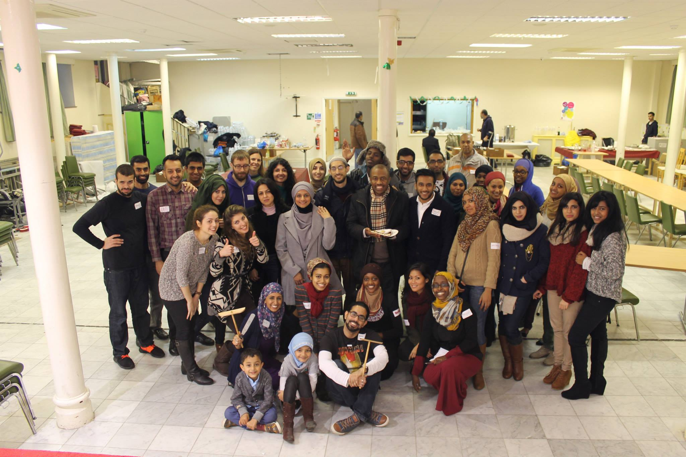
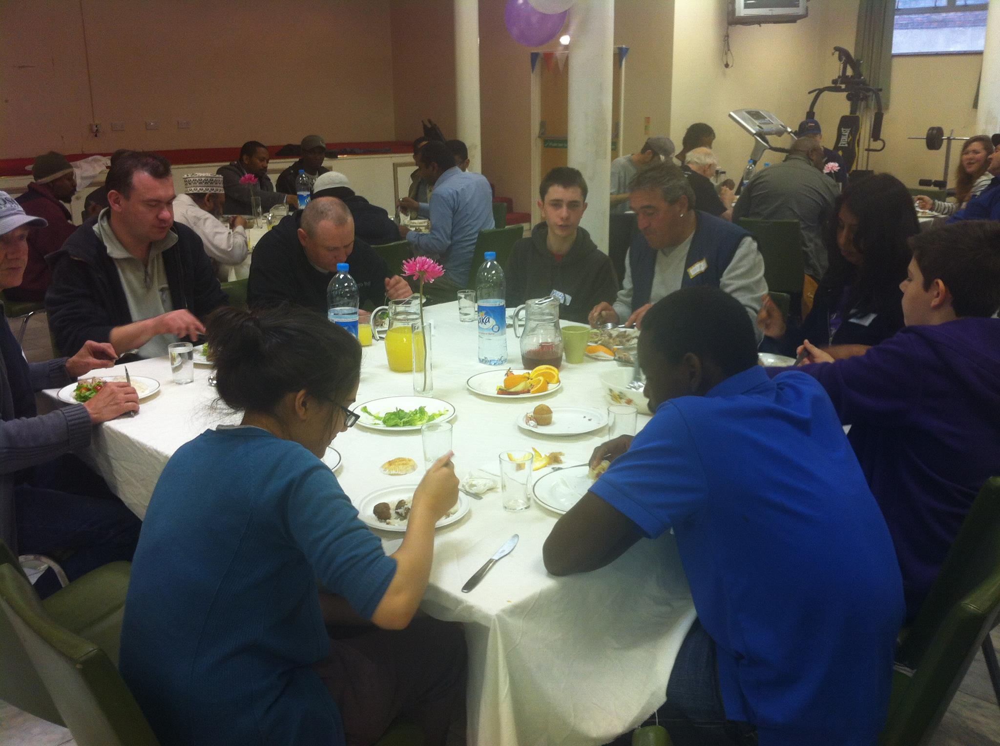
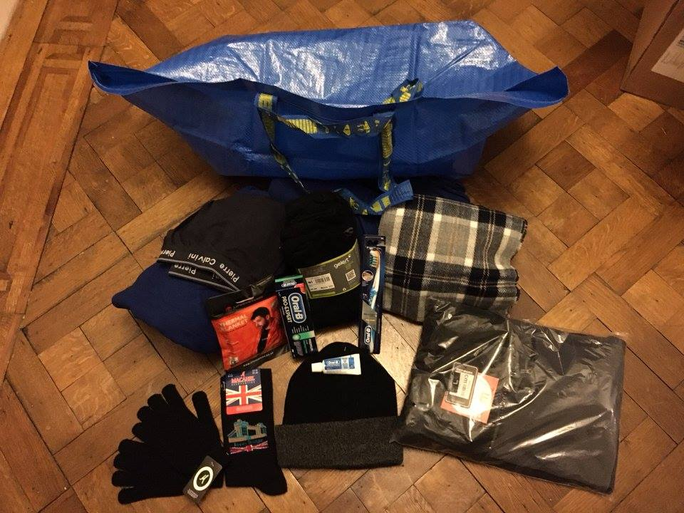
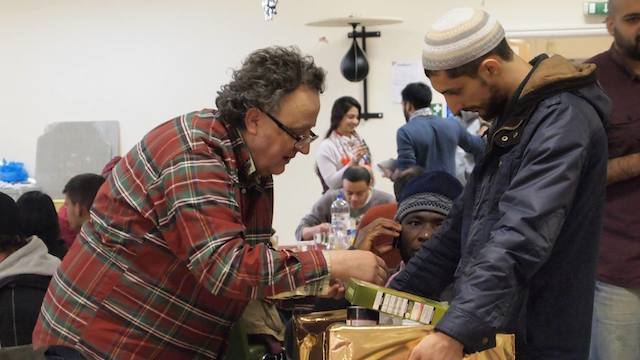
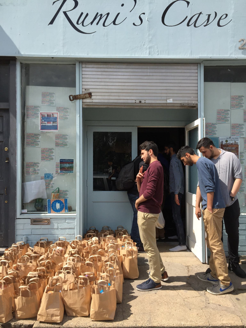
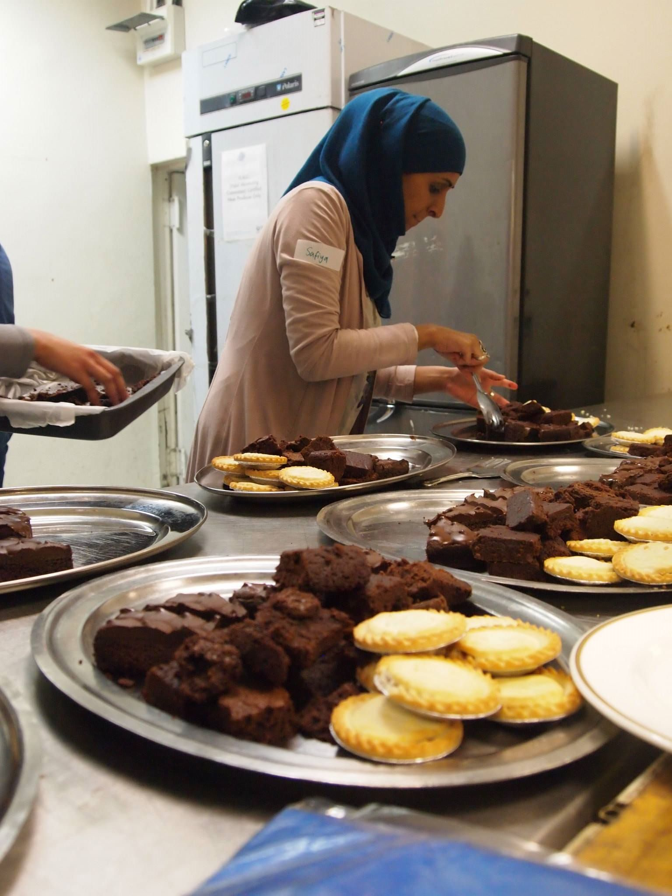
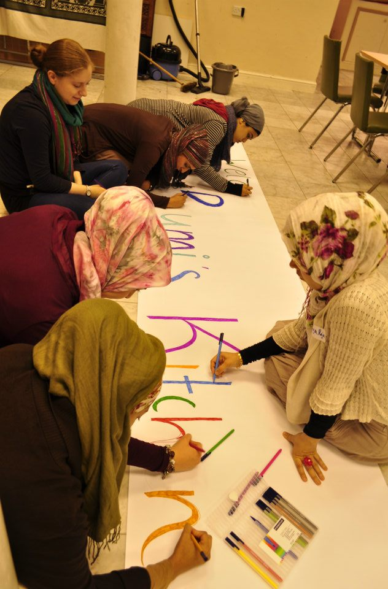

Rumi's Kitchen
Rumi’s Kitchen is an Ulfa Aid project aimed at providing support to homeless and other vulnerable individuals. We seek primarily to overcome the isolation and loneliness often experienced by those who are homeless, which can act as a significant barrier to their rehabilitation and reintegration into communities. Through Rumi’s Kitchen, individuals are encouraged to form much-needed positive relationships and new support networks.
We like to feed people at Rumi’s Kitchen, but we are certainly about more than simply offering a hot meal to people who come in off the street. The respect and dignity with which we treat our homeless guests makes Rumi’s Kitchen unique. We welcome our homeless guests as we would people into our own homes: with warmth and a home cooked meal. We sit with them, break bread with them, get to know them and let them get to know us, so that if you were to walk in, you may not even realise that many of people in the room have no place to call home.
We are currently operating 3 times a month and catering for 70 individuals on average each time, but we desperately want to grow. We would love to run more regularly and in more locations, and also to expand into running training programmes for our guests, enhancing both their skill set, their self worth and their confidence. We want to help them realise their potential and get their lives back on track.
Visit Rumi's Kitchen      